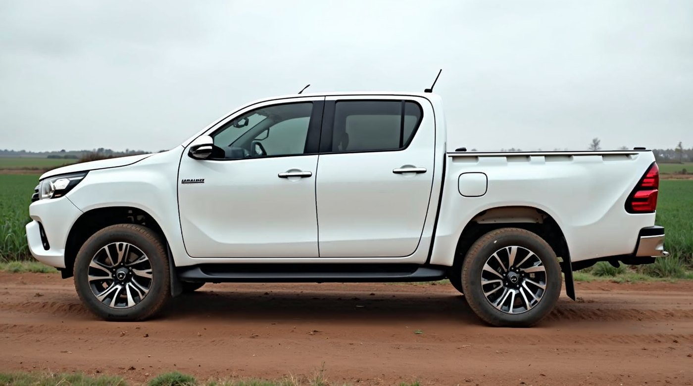
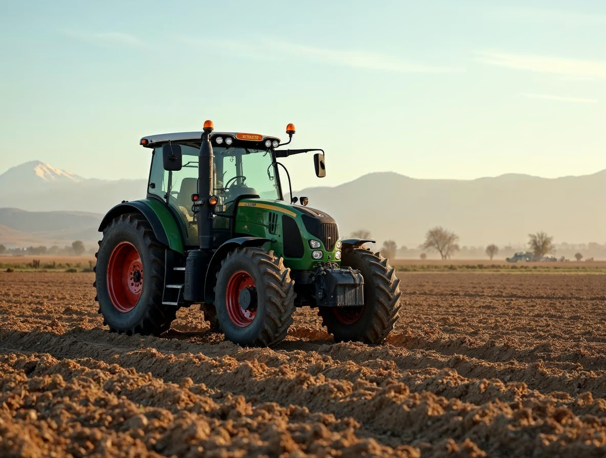
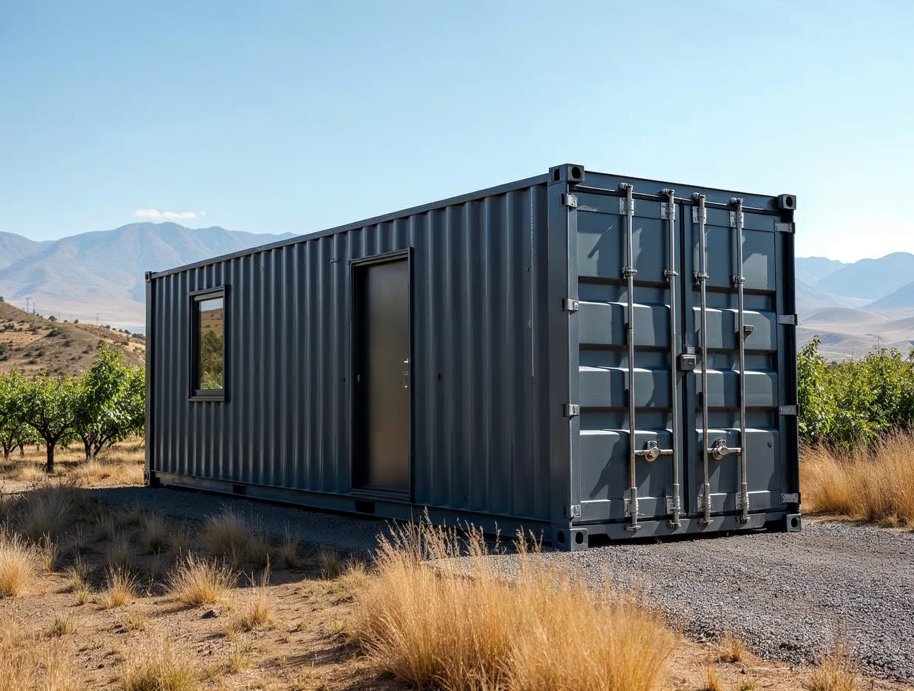
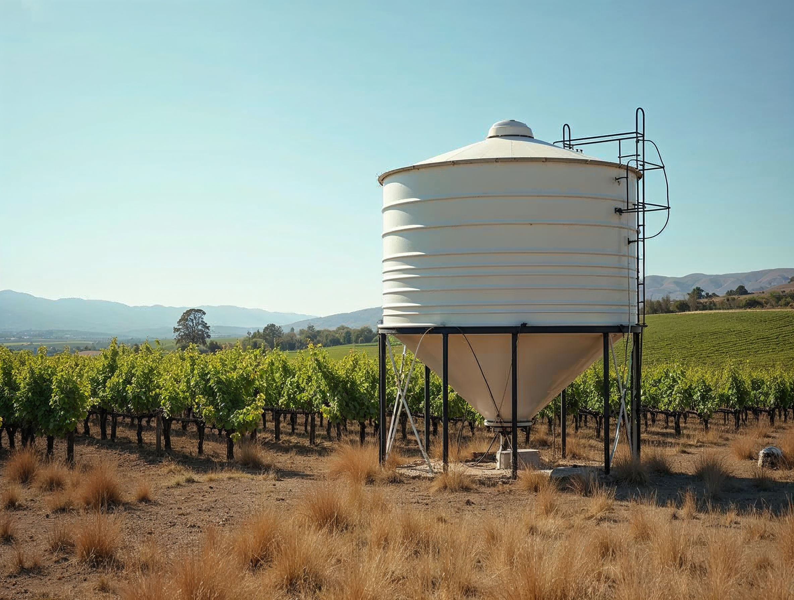
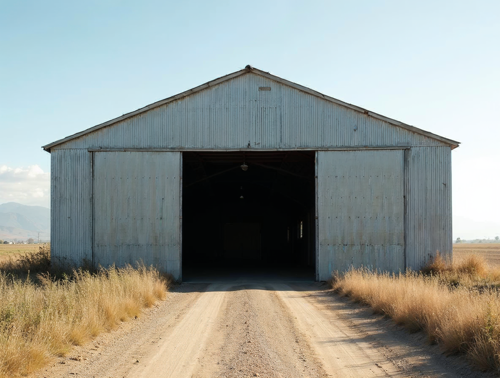

Operación: vehículos, maquinaria y equipamiento de terreno
Qué versión va en cada cosa
En un paño liso y grande (puerta, container, muro) va el logotipo completo. En un objeto (tractor, estanque, caseta) va el isotipo.
Las reglas
1 · Vehículo: horizontal, centrado en el paño liso de la puerta, 2/3 del ancho del paño. Bajada Gestión Agrícola. Nunca en el capó ni en el parabrisas.
2 · Maquinaria: isotipo a 25 cm de alto en la cabina o en el guardabarros, siempre sobre un paño plano. Una tinta si la máquina es de color.
3 · Container, caseta, bodega: panel de la lámina 30 o logotipo directo si la superficie es lisa y de un color de marca. Sobre corrugado, sólo isotipo grande.
4 · Estanque: isotipo verde a una tinta, a 1/5 del diámetro, en la cara que mira al camino.
Corte en vinilo de dos colores (verde + terracota) o una tinta; nunca impresión digital a sangre con fondo.

CamionetaHorizontal, 2/3 del paño de la puerta · Gestión Agrícola

MaquinariaIsotipo a una tinta, 25 cm, en la cabina · nunca el logotipo completo

Container · oficina de campoLogotipo crema a una tinta sobre el paño liso · 1/3 del largo

EstanqueIsotipo verde a 1/5 del diámetro, hacia el camino

BodegaPanel tinta de la lámina 30 sobre el corrugado, centrado sobre el portón
Lo que no se haceLogotipo gigante fuera del paño · isotipo repetido · bajada corporativa en terreno
Invariables
Paño liso grande → logotipo completo con bajada Gestión Agrícola · objeto → isotipo · vehículo: 2/3 del paño de la puerta, centrado · maquinaria: isotipo 25 cm a una tinta · container y bodega: panel o logotipo crema sobre superficie lisa; sobre corrugado, isotipo · vinilo de corte, una o dos tintas · nunca en capó, parabrisas ni sobre corrugado el logotipo completo.
Variables
Tamaño exacto según el paño real (se mide el vehículo) · crema o tinta según el color del soporte · con o sin el nombre del predio (lámina 34) · una tinta o dos según el material · en flota arrendada, imán con el panel de la lámina 30 en vez de vinilo.
⚠ Soportes de referencia generados — reemplazar por fotografía real de la operación
31 · Aplicaciones
Landera · Manual de marca